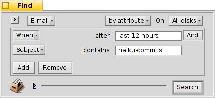

日本語
日本語 Français
Français Deutsch
Deutsch Italiano
Italiano Русский
Русский Español
Español Svenska
Svenska Українська
Українська 中文 ［中文］
中文 ［中文］ Português
Português Suomi
Suomi Slovenčina
Slovenčina English
English| インデックス |
|
Haiku のメールシステム カスタムステータスを使う クエリを使う 追加の小技 |
ワークショップ: メールの管理
このワークショップでは、Haiku 環境下で電子メールを管理する方法について調べます。電子メールサービスがメールプレファレンスで正しく設定されており、読者がメールアプリケーションの基本的な特徴を理解していることを仮定しています。
 Haiku のメールシステム
Haiku のメールシステム
もし、読者がほかのオペレーティングシステムから Haiku へやってきたとしたら、おそらく、MS Outlook や Mozilla の Thunderbird のような大きなアプリケーションを使っていたでしょう。それらはメールサーバーのアドレスなどの、すべての情報を入力する必要があり、また、それらは独自のコンタクトデータベースを使用しています。それらはメールの送信や受信を管理し、いくつかの特別なファイルに保管します。
電子メールクライアントを変更することは、いくつかのエクスポート / インポート、および変換が進行する面倒なことになることがあります。他になにか使えるものを調べるために、同時に一つ以上のクライアントを使うことも、たまに問題が起こります。
Haiku のメールシステムはそれらとは異なったものです。それは、より小さな別々のモジュールに分かれています。
メールサーバとの通信を管理する、mail_daemon があります。メールプレファレンスは、読者の電子メールアカウント、およびたとえば、メールをチェックする頻度を設定する中心の一つです。
受信または送信されたすべてのメールは、ひとつの電子メールファイルとして保存されます。ファイルには、BFS 属性中に、ヘッダ情報 (l差出人 (sender)、表題 (subject)、日付(date) のような)、およびステータス (新規 (New)、受信済 (Replied)、送信済 (Sent) のような) を持っています。このことにより、Haiku のすばやいクエリで、メールを検索 / フィルタリングすることができます。

あらゆる電子メールが別々のファイルであるので、それらを閲覧することは,フォルダー内の、(またはクエリの結果の) 画像ファイルを ShowImage でブラウズするのと同じぐらい容易なことです。Tracker ウィンドウを開いたままにしておくと、移動のために、前へ / 次へボタンを使うたびに、現在見ているファイルの選択が移動するのが見えるでしょう。
それらは別々のファイルなので、Haiku の メール以外のビューアを使ってもまったく問題ありません。
同様に、新規メッセージの作成は、メール送信を管理する mail_daemon によって扱われるありふれたファイルの作成となります。コンタクト情報は、 People アプリケーションに従います。
一言で言えば、ほかのメールクライアントが、メールサーバーとの通信からすべてのメールへのビュー、およびそれらを検索およびフィルタリングするためのツールの提供に至るまで、あらゆることができる場所です。Haiku は一連の小さなツールと、一般的なファイル管理を使います。
mail_daemon は、メールの受信 / 送信をして、普通のファイルに保存するためのものです。
Tracker ウィンドウおよびクエリは、電子メールファイルを検索および表示するためのものです。
メールアプリケーションは、電子メールファイルを閲覧し、People アプリケーションによるシステム全体に渡るコンタクト管理にしたがって、新規メッセージを作成するためのものです。
特に、Tracker およびクエリを使って電子メールを管理することは強力なアイデアです。得られる経験は、ファイル操作のあらゆる問題に転換できます。それが、画像、音楽、ビデオ、コンタクト、またはどんな書類でも、Tracker の使用は、ファイル管理のコアとなります。
同様に、これらのシステムエリアの改良は、電子メールだけでなく、それらを利用するすべてのアプリケーションに役立ちます。
カスタムステータスを使う
新着の電子メールをブラウズする場合、さらに詳しくそれに関して考えるように、後でそれらのうちのいくつかに戻りたいと思うかもしれません。それらを"New messages" クエリ中に維持するために、メールのメニュー を使用できましたが、その方法を積み重ねる傾向があります…)
ひとつの解決法は、もちろん、単に返答を始めて、下書きとして保存することです。しかし、読者が返事を書くつもりがなく、後でメールを再度ただ読みたいだけならば、それは理想的ではありません。

さらに良い、 の使用は、新しいステータスを作成し、メールを分類するためにそれを使用するためです。たとえば、ステータスを、"後で (Later)" と呼ぶことができ、それから、より多くの時間が取れたときに、そのためにクエリを実行することができました。
あるいは、特定のプロジェクトのために、別のステータスを使用します。たとえば、ステータス "HUG" ("Haiku ユーザーガイド" 用) を作成し、そこに、ユーザーガイドのコンテンツに影響をおよぼすかもしれないすべてのメールを集めます。それらは、いくつかの機能を変更または導入する、コードの変更に関するコミットメッセージのようなメール、または、ユーザーガイドを改善すると感じるあらゆるメールです。
どんな場合でも、ステータス名を短くするように努めてください。その方が、常にTracker 中で通常の幅の "Status" 列に適合します。
そのステータスをセットするために、メールアプリケーションで電子メールを開く必要はありません。Tracker アドオン、Mark as Read および Mark as... で、いくつかの電子メールファイルを選択し、一回でそれらのステータスをセットすることができます。
クエリを使う
確かに、電子メールをすべて格納するためにフォルダーを指定します、しかもそれを開けることができます。 そこに読者のメールのすべてがあります。しかし、時間とともに、フォルダーは込み入ってきます。そして、すべてを表示することは何千ものファイルのようにますます長くかかり、それらの属性を解析し、ソートしなければなりません。同様に、大抵の場合、2 年前のナイジェリアの王子およびそれらの相続問題の電子メールに実際に関心がありません…
クエリ、救出!
クエリを使うことで、メールの表示を限定できます。実際、Deskbar 中のメールボックスアイコンはクエリを使っています。

サブメニューは、ステータス "Draft (下書き)" に対するクエリを行います。このステータスは、メッセージを保存したときに、メールによって、ユーザーがメッセージを保存したときにセットされます。
および は、単に普通のフォルダーへのリンクです (私見ではあまり便利ではありません)。
サブメニューは、ステータス "New (新着)" に対するクエリによって現れます (ところで、同じクエリがメールボックスにメールがあることを示すため、メールボックスアイコンを変更するのに使われます)。
独自のクエリ (または、フォルダー、アプリケーション、スクリプトなど) をそのコンテキストメニューに追加できます。それら、またはそれらへのリンクを、~/config/settings/Mail/Menu Links に入れてください。
クエリのサンプル
便利なクエリの少しの例を以下に示します。
 これは、カスタムステータス "Later" を持つメールをすべて検索します。 |
 これは、過去 2 日間のメールをすべて検索します。 |
 これは、過去 2 週間に Ingo Weinhold から来たメールをすべて検索します。 |
 これは、過去 12 時間に、Haiku commit list に投稿されたものをすべて検索します。 |
追加の小技
クエリを、"クエリ" で保存せず、 "クエリテンプレート" として保存するなら、その起動は結果ウィンドウではなく、検索…ウィンドウとなるでしょう。そのほうが、件名、または送信元に対する検索文字列の交換や、たとえば、 "2 days" タイムリミットを "3 days" に変更することが容易にできます。
Tracke 設定で、"先行入力フィルタリング (type-ahead filtering)" を有効にすると、さらにもっとクエリの結果を素早くフィルタリングできます。たいてい、すべてのメールを過去 3 日間でクエリし、そこから先行入力フィルタリングで進むだけで充分です。大きな利点は、正確にどの属性で検索するか正確に指定する必要がないことです。フィルタリング中は、表示されている属性がすべて考慮されます。
RelatedMail は、送信済電子メールの同じ主題 / 送り手 / 時間枠などですべてのメールに対してクエリするすてきな小さなアプリケーションです。一種の、メールlアプリケーションの メニューが行うはずのものです。